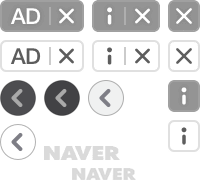

오늘 읽을만한 글
주제별로 분류된 다양한 글 모음
666
개의 글
관심주제 설정

[오늘의 푸드TV] 반이짝이의 반짝반짝 빛나는 레시피
매콤한 국물이 자작한 대전식 두부두루치기
조림과 찌개의 중간 느낌으로
보글보글 밥도둑이 따로 없어요
보글보글 밥도둑이 따로 없어요
#두부요리 #매콤한요리

[오늘의 푸드TV] 빵숙cook
몸에 좋은 고구마로 새콤달콤 장아찌 완성
도톰하게 썰어서 찐 고구마를
매콤한 간장에 담아 하루 숙성하기
매콤한 간장에 담아 하루 숙성하기
#밥도둑 #밑반찬

위잇딜라이트

매일 색다른 메뉴, 건강한 점심배송
짠테크의 시작은 점심값 아끼는 것으로부터!
하루 1인분 6900원 무료배송 맛점 받아보세요
하루 1인분 6900원 무료배송 맛점 받아보세요
지금 구매하기 >

레시피
도심 속 산책, 초록이 펼쳐진 파크뷰 카페
도심 속 산책 뒤 찾아가는 파크뷰 카페 모음zip. ▼ 클릭 ▼ 초록이 펼쳐진 파크뷰 카페 도심 속 산책 뒤 찾아가는 파크뷰 카페 모음zip. www.cosmopolitan.co.kr 대구 아눅앞산 벚...
코스모폴리탄 · 2주일 전

레시피
같은 생선인데 왜 지역마다 맛이 다를까?
동해에서 잡은 전어와 남해에서 잡은 전어는 맛이 확실히 다릅니다. 전어뿐만 아니라 같은 종의 생선임에도 지역마다 맛이 달라지는 생선들이 있죠. 지역마다 맛이 다르다는 것은 ...
인어교주해적단 · 2주일 전

레시피
고추장 황태구이 만드는 법 황태구이양념 황태포구이
고추장 황태구이 만드는 법 황태구이양념 황태포구이 황태요리 참 좋아하는 알콩네 오늘은 명절 요리로도 참 잘 어울리는 고급스러운 메뉴 황태양념구이를 준비해 보았답니다!!...
알콩 · 1주일 전

레시피
씻은 묵은지 요리 묵은지 된장지짐 멸치 넣어서
뭉근히 ~ 때론 부들 부들하게 멸치 몇마리와 들기름 한큰술 듬뿍 넣어서 묵은지김치찜 한냄비 만들어 놓으면 뜨겁게 먹어도 차갑게 먹어도 맛있어요. 고기 넉넉히 넣어서 매콤하...
말똥엄마 · 1주일 전